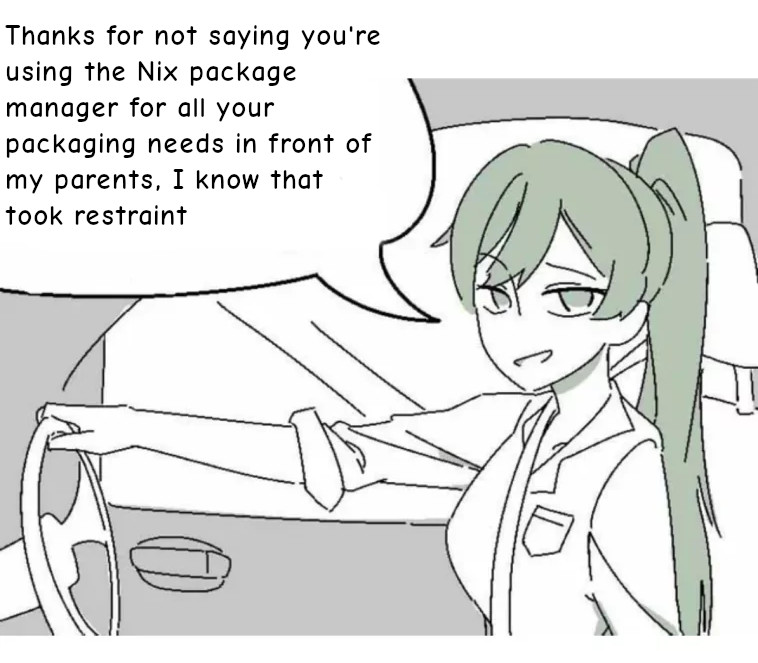
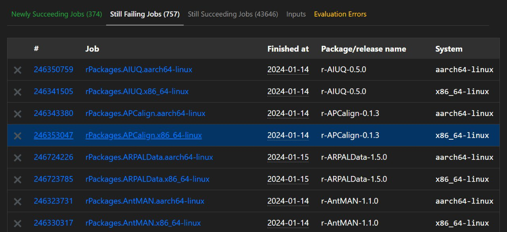
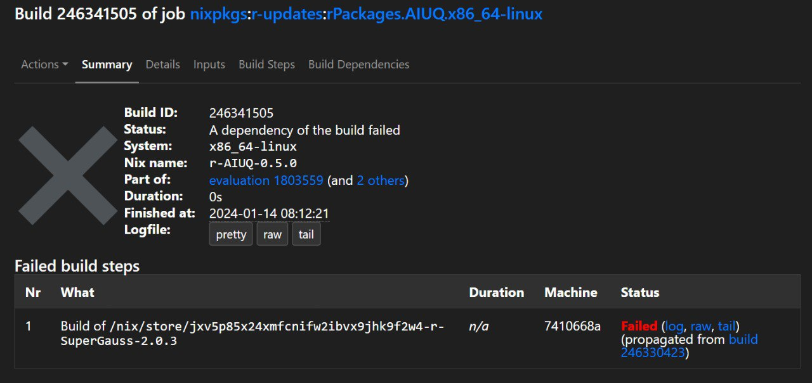
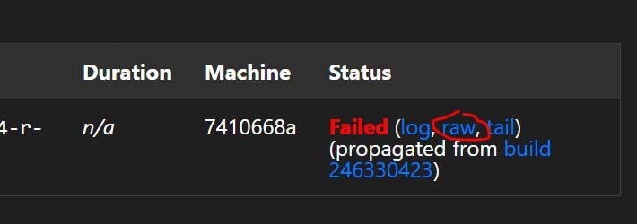

Reproducible data science with Nix, part 10 – contributing to nixpkgs

I’ve very recently started contributing to the nixpkgs repository of packages, which contains all the packages you can install from the Nix package manager. My contributions are fairly modest: I help fix R packages that need some tweaking to make them successfully build for Nix. Most of these fixes are very simple one-liners.
Most users of any free and open source tool rarely contribute to the development of this tool: I don’t think it is due to lack of skills and/or time or interest, but mostly because starting to contribute to a tool requires some knowledge that is rarely written down (even more so for an entire ecosystem). These tools and ecosystems grow organically, and if you’re not in the right spot at the right time or are not lucky enough to have kind people taking time to explain things to you, contributing might feel completely overwhelming.
Thankfully, I was very lucky to have found the small but very active community of R contributors to nixpkgs on Matrix which very kindly took the time to bring me up to speed!
I wanted to share my experiences in this blog post: but this blog post is not just going to be about me contributing to nixpkgs from the perspective of an R user (and giving you some pointers on how to start yourself), but also about how I built a report (let’s call it like that) to keep track of which R packages got fixed. This report is built using R, Nix, Github Actions and lists all the failed R package builds from Hydra (more on this later). The report gets updated every day automatically at midnight, and is accessible here. I also used a very minimalistic approach to build this: no {tidyverse} packages, and no Quarto. Why? Mostly just to keep dependencies at a minimum to accelerate CI/CD, but also for fun. And honestly, I must admit that base R is more than capable on its own and had forgotten that.
Contributing to nixpkgs
As explained in part 8, nixpkgs is “nothing but” a huge GitHub repository containing thousands of Nix expressions. These expressions are then used to actually build the software that then gets installed by Nix. For example, this is the expression for Quarto. As you can see, it starts by downloading the pre-compiled binary, and then applying “patches”. Essentially making sure that Quarto installed by Nix is able to find the other pieces installed by Nix that Quarto needs (Deno, Pandoc, Typst and so on). It then continues by installing Quarto itself (because we’re downloading a pre-compiled binary, installation consists in moving files in the right spot), finally some tests are executed (quarto check) and then some metadata is defined. Not every package is defined like this, with a single Nix expression, though. For example, individual R packages are not defined like this. Instead, every package from CRAN and Bioconductor gets built using only a handful of files that can be found here.
(By the way, you can look for packages and find their associated Nix expressions on the NixOS package search).
The way this works, is that periodically the generate-r-packages.R script is run and generates the cran-packages.nix file (and the equivalent Bioconductor files). For each package on CRAN, a line gets written in the script with the package’s name, its current version on CRAN, and very importantly its dependencies. For example, here is the line for {dplyr}:
dplyr = derive2 { name="dplyr"; version="1.1.4";
sha256="1jsq8pj12bngy66xms486j8a65wxvyqs944q9rxkiaylsla08wyg";
depends=[cli generics glue lifecycle magrittr pillar R6 rlang tibble tidyselect vctrs]; };
These dependencies are actually the packages that can be found in the DESCRIPTION file under Imports. cran-packages.nix (and the same goes for the Bioconductor equivalents, bioc-packages.nix, bioc-annotation-packages.nix and bioc-experiment-packages.nix) get imported in the default.nix file. In it, another file, generic-builder.nix gets also imported, which contains a function that will attempt building the package. Most of the time this succeeds, but some packages require further tweaks. Packages that have a field NeedsCompilation in their DESCRIPTION files are usually candidates for further tweaking: these packages require system-level dependencies, which are often listed under SystemRequirements (but not always, which complicates matters). For example, the {terra} package has these system requirements listed in itself DESCRIPTION file:
SystemRequirements: C++17, GDAL (>= 2.2.3), GEOS (>= 3.4.0), PROJ (>= 4.9.3), sqlite3
so these also need to be added if we want to build them on Nix. But if we look at the line for {terra} in cran-packages.nix, this is what we see:
terra = derive2 { name="terra"; version="1.7-65";
sha256="0m9s5am8l6il1q0skab614cx0qjsb1i9xcv6nm0sdzj7p9lrzkfl";
depends=[Rcpp]; };
Only {Rcpp} is listed, which is a dependency, yes, but an R package dependency, not a system-level requirement. System-level requirements need to be added in the default.nix file manually. In the default.nix, you’ll find a long list of packages called packagesWithNativeBuildInputs and packagesWithBuildInputs. NativeBuildInputs and BuildInputs are Nix jargon for dependencies the package needs, at compile-time and then at run-time specifically. For example, {Rcpp} is a BuildInput of {terra}, while the system-level requirements are NativeBuildInputs (in the context of R packages though, this rarely matters. If you want more details, refer to this Gist I’ve forked).
For {terra}, this means that we need to add this line to the list {packagesWithNativeBuildInputs} (I simplified the syntax here a bit):
terra = [ gdal proj geos ];
gdal, proj and geos are the system requirements that need to be added for {terra} to build successfully on Hydra.
Hydra
Hydra is a tool for continuous integration testing and software release that uses a purely functional language to describe build jobs and their dependencies (source: the Hydra Manual)
If you’re coming from R, think of Hydra as R-hub, which will check and build your R package before submitting to CRAN. Hydra periodically tries to rebuild packages. If that package fails, then the log gets hosted. When it comes to R packages, we can check which packages built successfully or not on here.
As of writing, the latest evaluation was in mid-January. A new release of R is going to get released on the 29th of February (or maybe was already released, I’m not sure when this blog post is going to get posted), and this is when new evaluations will likely be executed. Evaluations are the processes by which Nix expressions get… evaluated and used to actually build packages. So if we look into the results of the evaluation of the 17th of January, we see that 757 jobs failed:

One job doesn’t strictly correspond to one package though: packages get built for different architectures, and each architecture gets its build process. If we log into the details of the first package whose build failed {AIUQ}, we see this:

From the log we see that actually what failed one of its dependencies, {SuperGauss}, so fixing {SuperGauss} will likely fix {AIUQ} (I say likely because maybe another needed dependency also fails). So we could try to fix {SuperGauss} first. Let’s see why {SuperGauss}, by clicking on raw:

Here is what we see:
Running phase: unpackPhase
unpacking source archive /nix/store/615bdvjchxrd7wp5m7dhg4g04yv7ncza-SuperGauss_2.0.3.tar.gz
source root is SuperGauss
setting SOURCE_DATE_EPOCH to timestamp 1645735202 of file SuperGauss/MD5
Running phase: patchPhase
Running phase: updateAutotoolsGnuConfigScriptsPhase
Running phase: configurePhase
Running phase: buildPhase
Running phase: checkPhase
Running phase: installPhase
* installing *source* package 'SuperGauss' ...
** package 'SuperGauss' successfully unpacked and MD5 sums checked
** using staged installation
checking for gcc... /nix/store/xq8920m5mbd83vdlydwli7qsh67gfm5v-gcc-wrapper-13.2.0/bin/cc
checking whether the C compiler works... yes
checking for C compiler default output file name... a.out
checking for suffix of executables...
checking whether we are cross compiling... no
checking for suffix of object files... o
checking whether we are using the GNU C compiler... yes
checking whether /nix/store/xq8920m5mbd83vdlydwli7qsh67gfm5v-gcc-wrapper-13.2.0/bin/cc accepts -g... yes
checking for /nix/store/xq8920m5mbd83vdlydwli7qsh67gfm5v-gcc-wrapper-13.2.0/bin/cc option to accept ISO C89... none needed
checking for pkg-config... no
checking for FFTW... configure: error: in `/build/SuperGauss':
configure: error: The pkg-config script could not be found or is too old. Make sure it
is in your PATH or set the PKG_CONFIG environment variable to the full
path to pkg-config.
Alternatively, you may set the environment variables FFTW_CFLAGS
and FFTW_LIBS to avoid the need to call pkg-config.
See the pkg-config man page for more details.
To get pkg-config, see <http://pkg-config.freedesktop.org/>.
See `config.log' for more details
ERROR: configuration failed for package 'SuperGauss'
* removing '/nix/store/jxv5p85x24xmfcnifw2ibvx9jhk9f2w4-r-SuperGauss-2.0.3/library/SuperGauss'
This is essentially what we would see if we tried to install {SuperGauss} on Linux. The error message is quite clear here: a system-level dependency, pkg-config is missing. Looks like we found our first package to fix!
Fixing a package
The first step is to fork and clone the nixpkgs GitHub repository to your computer (be patient, the repository is huge so the download will take some time):
git clone git@github.com:b-rodrigues/nixpkgs.git
It’s also a good idea to add the original nixpkgs as an upstream:
git remote add upstream https://github.com/NixOS/nixpkgs
This way, you can pull changes from the original nixpkgs repository into your fork easily with:
git fetch upstream master
git merge upstream/master
These two commands synchronize your local copy of the repository with upstream. So now we can create a new branch to try to fix {SuperGauss}:
git branch -b fix_supergauss
and then we should try to build {SuperGauss} locally. This is because it might have been fixed in the meantime by someone else, so let’s try to build it with (run the following command in a terminal at the root of your local copy of the nixpkgs repository):
nix-build -A rPackages.SuperGaussbut I often prefer to use this instead, because this will build the package and drop me into a shell where I can start R, load the package, and try it by running some of its examples:
nix-shell -I nixpkgs=/path/to/my/nixpkgs -p rPackages.SuperGauss R
If any of the commands above fail with the same error message as on Hydra, we know that it hasn’t been fixed yet. So the fix consists in opening the pkgs/development/r-modules/default.nix and add the following line:
SuperGauss = [ pkg-config ];
in either the lists packagesWithBuildInputs or packagesWithNativeBuildInputs (as explained above, it doesn’t really matter). Trying to rebuild SuperGauss again will result in a new error message. Another dependecy needs to be added:
SuperGauss = [ pkg-config fftw.dev ];
Then, building succeeds! We can now commit, push, and open a pull request. Commit messages need to be formatted in a certain way, as per nixpkgs contributing guide, so:
git add .
git commit -m "rPackages.SuperGauss: add dependencies"
also, there should only be one commit per fix. So if in the process of fixing a package you commited several times, you will need to use git rebase to squash all the commits into one. Once you open the pull request, a maintainer will get pinged, and merge the PR if everything is alright (which is usually the case for these one-liners). You can see the PR for {SuperGauss} here.
The process is relatively simple once you did it once or twice, but there are some issues: there is no easy way to find out on which packages we should focus on. For example, is {SuperGauss} really that important? The fix was very simple, so it’s ok, but if it took more effort, should we spend the limited time we have on it, or should we focus on another package? Also, if someone has already opened a PR to fix a package, but that PR hasn’t been merged yet, if I try to also fix the same package and try to build the package, it would still fail. So I might think that no one is taking care of it, and waste time duplicating efforts instead of either focusing on another package, or reviewing the open PR to accelerate the process of merging.
Discussing this with other contributors, László Kupcsik suggested we could use {packageRank} to find out which packages are getting a lot of downloads from CRAN, and so we could focus on fixing these packages first. This is a great idea and it gave me the idea to build some kind of report that would do this automatically for us, and also list opened and merged PRs so we wouldn’t risk duplicating efforts.
This report can be found here and now I’ll explain how I built it.
Which packages to fix and keeping track of PRs
So the main idea was to know on which packages to focus on. So essentially, we wanted this table:
but with {packageRank} added to it. So the first step was to scrape this table, using {rvest}. This is what you can find on lines 11 to 63 of this {targets} workflow (alongside some basic cleaning). I won’t go too much into detail, but if something’s not clear, ping me on twitter or Mastodon or even open an issue on the report’s repository.
Next I also get the reason the package failed building. So in the example from before, {AIUQ} failed because {SuperGauss} failed. On Hydra, you should be clicking to see this, but here I scrape it as well automatically, and add this information in a column called fails_because_of. This is what you can read on lines 65 to 77. I use a function called safe_get_failed_deps(), which you can find in the functions.R script on here. safe_get_failed_deps() wraps the main function, get_failed_deps(), with tryCatch(). This is because if anything goes wrong, I want my function to return NULL instead of an error, which would crash the whole pipeline.
Next, I add the packages’ rank using a function that wraps packageRank::packageRank() called safe_packageRank() on line 97.
safe_packageRank() uses tryCatch() to return NULL in case there’s an error. This is needed because packageRank() will only work on CRAN packages, but Hydra also tries to build Bioconductor packages: when these packages’ names get passed to packageRank(), an error gets returned because these are not CRAN packages:
packageRank("haha")
Error: haha: misspelled or not on CRAN/Archive.
but instead of an error that would stop the pipeline, I prefer it simply returns NULL, hence tryCatch(). Also, I compute the rank of the package listed under the fails_because_of column and not the package column. If we go back to our example from before, {AIUQ} failed because {SuperGauss} failed, I’m actually interested in the rank of {SuperGauss}, and not {AIUQ} (which I way I went to all the trouble to scrape the failing dependency).
So, for now, when comparing to the table on Hydra, we have two further columns with the dependency that actually fails (or not, if the package fails on its own and not because of a dependency), and the rank of either the dependency that fails or the package itself.
Next, I’d like to see if PRs have already been opened and merged. For this, I use the gh tool, which is a command line tool to interact with GitHub repositories. I wrote the get_prs() wrapper around gh to list the opened or the merged PRs of the nixpkgs repository. This is what it looks like (and is defined here):
get_prs <- function(state){
output_path <- paste0(state, "_prs.json")
# Run the command
system(paste0(
"gh pr list --state=", state,
" --search=rPackages -R NixOS/nixpkgs --json title,updatedAt,url > ",
output_path
))
# Return path for targets
output_path
}
Because the PRs follow the contributing guidelines, I can easily process the PRs titles to get the name of the package (I essentially need to go from the string “rPackages.SuperGauss: fixing build” to “SuperGauss”) using regular expressions. This is what happens in the clean_prs() function here.
Most of what follows is merging the right data frames and ensuring that I have something clean to show. Finally, an .Rmd document gets compiled, which you can find here. This will get compiled to an .html file which is what you see when you click here.
This runs every day at midnight using GitHub actions (the workflow is here) and then I use the raw.githack.com here to serve the rendered HTML file. So every time I push, or at midnight, the action runs, computes the package rank, checks if new PRs are available or have been merged, and the rendered file is immediately available. How’s that for serverless CI/CD?
If you are interested in using Nix to make your analyses reproducible, check out the other blog posts in this series and join our small but motivated community of R contributors to nixpkgs on Matrix. If you are interested in the history of Nix, checkout this super interesting blog post by Blair Fix.
If you’re interested into using project-specific, and reproducible development environments, give {rix} and Nix a try! Learn more about {rix} on its Github repository here or website. We wrote many vignettes that are conveniently numbered, so don’t hesitate to get started!
Thanks to the colleagues of the Matrix nixpkgs R channel for the fruitful discussions that helped shape this blog post and for proof-reading.